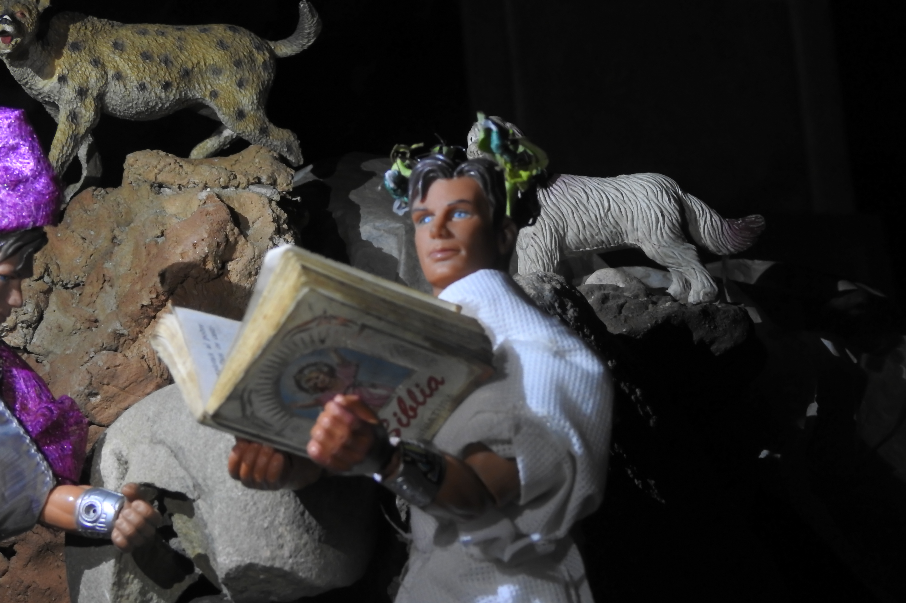
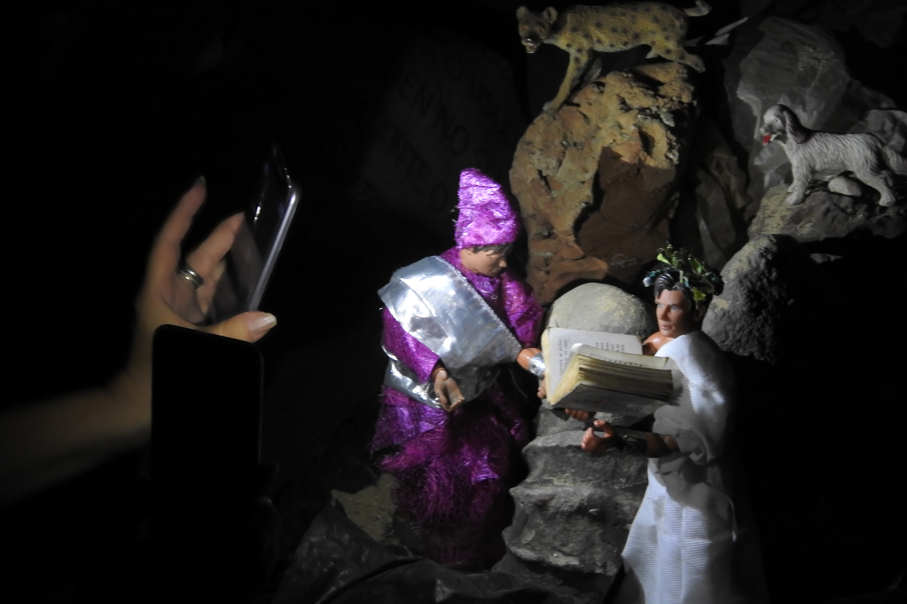

Virgilio, salvador de Dante
 «Poeta», dije, en suplicante acento:
«por el dios que te fué desconocido,
sálvame de este mal y de otro evento.
»Llévame donde tú me has ofrecido,
de San Pedro a la puerta luminosa,
al través de ese mundo dolorido. (p. 12-13)
Esta foto es un poco peculiar. Al principio intenté iluminar solo a Virgilio, para resaltarlo como la persona que salva a Dante de las bestias y lo lleva a otro lugar, pero al final obtuve una iluminación que iluminaba a todos los personajes; sin embargo, la luz se corta abruptamente al final de la escena, lo cual produce un efecto agradable, y Virgilio aún es el énfasis principal de la escena, así que estoy satisfecho con los resultados. Usé dos luces: la primera fue a 45° a la derecha de la segunda, que fue frontal y actuó también como luz de contra - aunque la imágen misma fue tomada desde un ángulo inclinado, así que tal vez la primera es lateral y la segunda inclinada? ;)